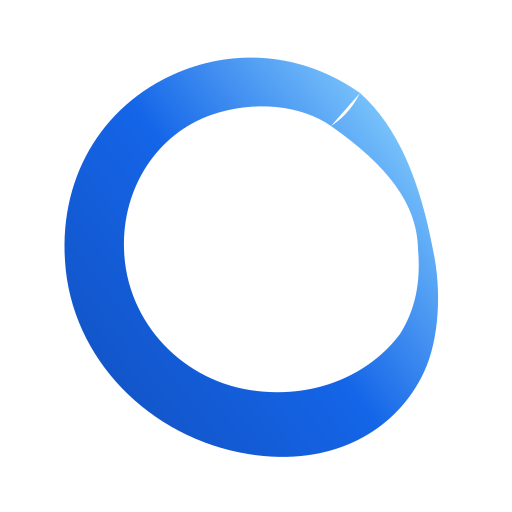
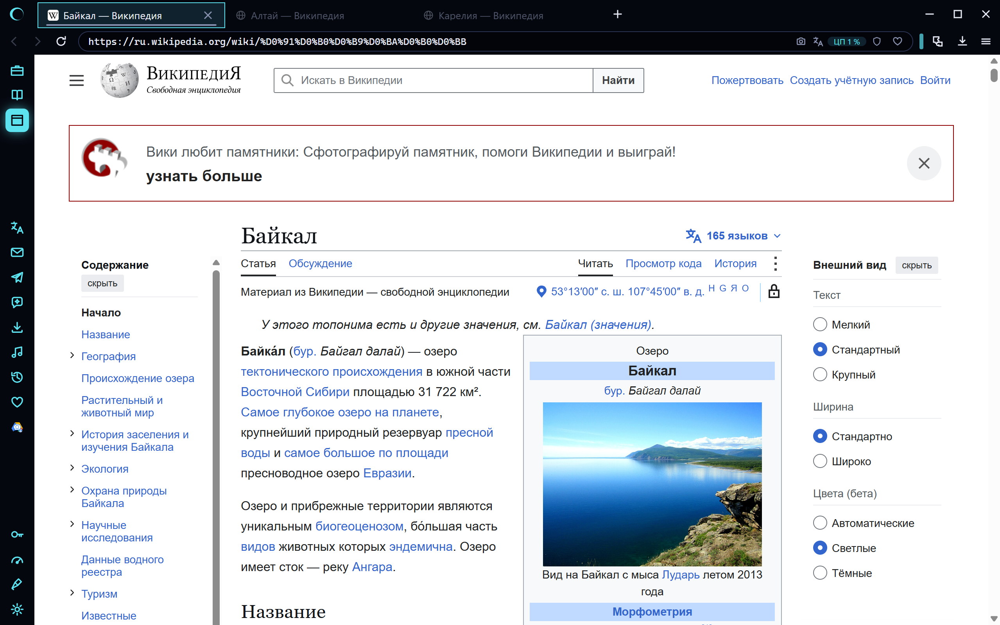

Байкал — Википедия
Алтай — Википедия
Карелия — Википедия
Приватно
ЦП 2 %

 Алтай — ВикипедияКарелия — ВикипедияАлтай — ВикипедияКарелия — Википедия
Алтай — ВикипедияКарелия — ВикипедияАлтай — ВикипедияКарелия — Википедия